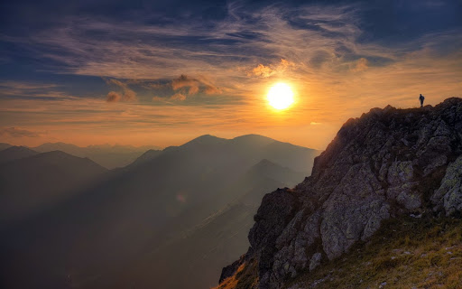
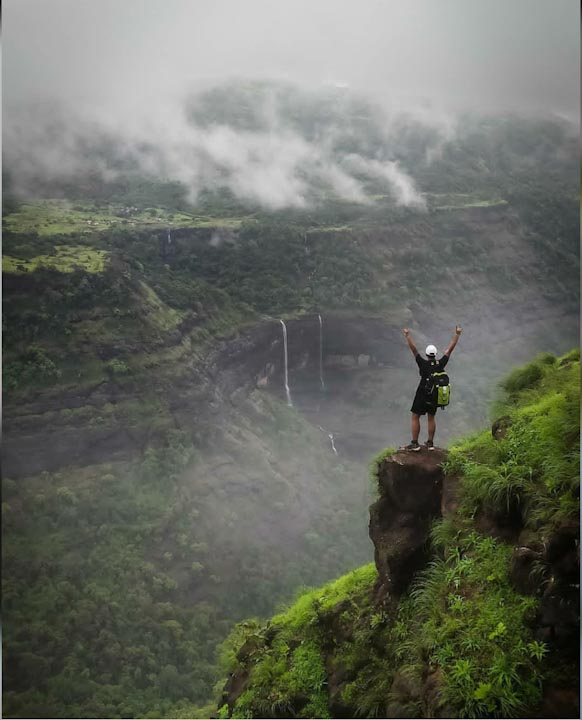
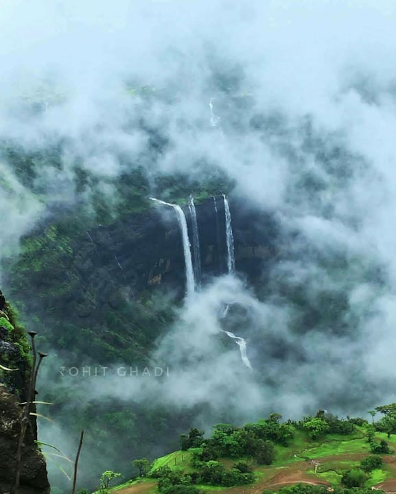

<div class="container-fluid">   
    <div class="row">
        <div class="col-md-12">
            <div class="card bg-dark text-white">
                
                <div class="card-img-overlay">
                <h5 class="card-title-main">Welcome to Rajmachi</h5>
                </div>
              </div>

              <div class="p1 mt-3">
                  <p>At a distance of 15 km from Lonavala, 15 km from Khandala, 82 km from Mumbai & 82 km from Pune, Rajmachi Fort is an ancient fort situated in Pune 
                    district of Maharashtra. It is one of the popular tourist places near Mumbai for trekking and also among the best places to visit in Lonavala. 
                    This famous fort in Maharashtra lies at an altitude of 2710 feet. This is a protected monument and is among the most popular attraction not 
                    to miss in a Lonavala tour packages.
                    Historically, Rajmachi fort was a strategic fort to control Bor Ghat (between Khopoli and Khandala on Mumbai-Pune route) which was a historical trade route.
                    </p>
              </div>
              <div class="clearfix">
                
                <p>It is one of the ideal one day trip near Mumbai. The fort complex was originally constructed by the Satavahanas. 
                    In 1657 CE, Shivaji Maharaj captured this fort along with other neighbouring forts from the Adilshahi ruler of Bijapur. 
                    In 1704 CE, the Mughal Emperor Aurangzeb captured the fort from the Marathas. However, the Marathas regained its control in 1705 CE. 
                    In 1713 CE, Shahu Maharaj handed over Rajmachi fort to Kanhoji Angre. Eventually in 1818 CE with the downfall of the Marathas, 
                    the British took over the Rajmachi Fort. 
                    Rajmachi Fort consists of two citadels namely Shrivardhan and Manaranjan Forts. 
                    It is a very famous fort located near Pune and also one of the top heritage sites in Lonavala. Surrounded by a wide plateau, this fort overlooks the Bor Ghat. The fort complex consists of huge ramparts, strong walls, 
                    massive gateways, residential units, water reservoirs, administrative centers and secret gates for exit. Kal Bhairav temple is situated in the gorge 
                    between Shrivardhan and Manaranjan forts. In rainy season this region is more beautiful with several waterfalls, streams and lush green forests and meadows. 
                    Ancient Buddhist caves known as Kondhane caves are situated on the western side of the Rajmachi plateau, which were supposedly carved during 200 BC. 
                    There are 8 Buddhist caves of the Hinayana Buddhist tradition. The Kondhane caves enclose sculptures, vihara and stupas of ancient Buddhist architecture. 
                    Although many stupas, front entrance and the floor of the caves were damaged in an earthquake only the Chaitya remained intact.
                             
                </p>
              </div>
              <div class="clearfix">
                
                <p>
                    There are two ways to reach the Rajmachi fort, one is from Lonavala, roughly 15 km flat walk and the other one is from Karjat, 
a gradual climb of around 5 km. For beginners, it would be better to trek from Lonavala as this is a much easier path. 
It will take about 5 hours of hiking to reach Udhewadi, the base of Rajmachi fort by this route. Only SUVs can reach Udhewadi village which is situated 
at the base of Rajmachi Fort to avoid 15 km long trek.

The route from Kondivade village near Karjat is tough and involves climb-up of about 2000 feet. From Kondivade village one can reach Rajmachi via 
the Kondhane village and visit the ancient Kondhane Buddhist caves on the way. The caves are 3 km away from Kondivade village and has mototable road. 
The trek to Rajmachi fort starts from Kondhane Caves, which is about 5 km from the fort. It takes around 3-4 hours to reach Rajmachi from Kondhane Caves.

Camping in Rajmachi is a perfect idea especially because of the long trek. Rajmachi Rural Aid and Development Programme (NGO) have 2 dormitories 
to provide accommodation facilities for trekkers to Rajmachi in Udhewadi village at a nominal charge.<br><br>

Timings: 9 AM to 5 PM.<br>


Distance from Lonavala Railway Station: 15 Kms<br>

How to reach:<br>

By Air: <br>
The nearest airport is at Pune & Mumbai.<br><br>

By Rail: <br>
Trains arrive here from Pune, Mumbai, Khandala and other cities.<br><br>

By Road:<br>
Private transport is more convenient if you would like to visit places around Rajmachi.<br><br>

By Bus:<br>
State-run and private bus services are available from many cities in Maharashtra and other states.<br><br>

By Walk & Trek :<br>
You can visit here by walk and trek also (upto your prefrences)<br><br>
                </p>
              </div>
              <div class="card mt-5">
                <h5 class="card-header">Hotels And Resorts near Rajmachi. </h5>
                <div class="card-body">
              <div class="row">
                <div class="col-sm-4">
                  <div class="card">
                      
                    <div class="card-body">
                      <h5 class="card-title">Upper Deck Resort</h5>
                      <p class="card-text">Offering an outdoor swimming pool and a massage parlour, Upper Deck Resort is located in Lonavala.
                           For any assistance, guests can approach the 24-hour front desk.
                    </p>
                      <a href="#" class="btn btn-primary">Book Room</a>
                    </div>
                  </div>
                </div>
                <div class="col-sm-4">
                  <div class="card">
                      
                    <div class="card-body">
                      <h5 class="card-title">Della Hotel</h5>
                      <p class="card-text">Della Resorts is a designer resort spread over 43 acres. 
                          Housed within this property is Della Adventure offering adventure activities including swoop swing</p>
                      <a href="#" class="btn btn-primary">Book Room</a>
                    </div>
                  </div>
                </div>
                <div class="col-sm-4">
                    <div class="card">
                          
                      <div class="card-body">
                        <h5 class="card-title">Eko Stay Serenity Villa</h5>
                        <p class="card-text">Located in Lonavala, 10 km from Bhushi Dam and 16 km from Lion's Point, 
                            EKO STAY- SERENITY VILLA offers an outdoor swimming pool and air conditioning.
                        </p>
                        <a href="#" class="btn btn-primary">Book Room</a>
                      </div>
                    </div>
                  </div>
                  <div class="col-sm-4">
                    <div class="card mt-3">
                          
                      <div class="card-body">
                        <h5 class="card-title">Little Bliss Villa Hotel</h5>
                        <p class="card-text">Featuring a terrace, Naomi Beach Resort is set in Nagaon. 
                            Among the facilities of this property are a restaurant, a 24-hour front desk and room service, along with free WiFi.
                            The units in the hotel are equipped with a flat-screen TV. At Naomi Beach Resort, every room has air conditioning and a private bathroom.</p>
                        <a href="#" class="btn btn-primary">Book Room</a>
                      </div>
                    </div>
                  </div>
                  <div class="col-sm-4">
                    <div class="card mt-3">
                      
                      <div class="card-body">
                        <h5 class="card-title">Hill Treat</h5>
                        <p class="card-text">
                           Featuring a restaurant, the 3-star resort has air-conditioned rooms with a private bathroom. 
                          The accommodations provides a 24-hour front desk, room service and organizing tours for guests.
                          Set in Lonavala, Hill Top Villa offers accommodation with a private pool.
                        </p>
                        <a href="#" class="btn btn-primary">Book Room</a>
                      </div>
                    </div>
                  </div>
              </div>
            </div>
        </div>
        </div>
    </div>
</div>